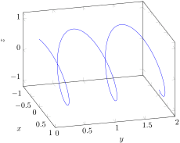
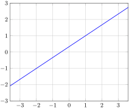

Section 1.5 Curves
Definition 1.5.1.
A vector-valued function is a function
\begin{equation*}
\vr(t) = \langle x(t), y(t), z(t) \rangle
\end{equation*}
whose input is a real parameter \(t\) and whose output is a vector that depends on \(t\text{.}\) The graph of a vector-valued function is the set of all terminal points of the output vectors with their initial points at the origin.
Parametric equations for a curve are equations of the form
\begin{equation*}
x = x(t), \ \ \ y = y(t), \ \ \ \text{ and } \ \ \ \ \ z = z(t)
\end{equation*}
that describe the \((x,y,z)\) coordinates of a point on a curve in \(\R^3\text{.}\)
A curve together with a parameterization is called a parametrized curve.
If \(\mathcal{C}\) is the graph of a vector-valued function \(\vr(t)\text{,}\) then we say that \(\vr(t)\) is a parameterization of \(\mathcal{C}\text{.}\)
Activity 1.5.1.
Which of the following vector-valued functions is a parameterization of the curve
\(\mathcal{C}\) shown below?

\(\displaystyle \vr(t) = \lrangle{ \cos t, \sin t, \frac{2t}{5\pi} }\)
\(\displaystyle \vr(t) = \lrangle{ \cos t, \sin t, 4 }\)
\(\displaystyle \vr(t) = \lrangle{ \sin t, \frac{2t}{5\pi}, \cos t }\)
\(\displaystyle \vr(t) = \lrangle{ 2\sin t, \frac{2t}{5\pi}, 2\cos t }\)
Activity 1.5.2.
Which of the following vector-valued function is not a parameterization of the line
\(\mathcal{L}\) shown below?

\(\displaystyle \vr(t) = \lrangle{-2 + 3t, -1 + 2t}\)
\(\displaystyle \vr(t) = \lrangle{1 + 3t, 1 + 2t}\)
\(\displaystyle \vr(t) = \lrangle{1 - 3t, 1 - 2t}\)
\(\displaystyle \vr(t) = \lrangle{1 + 6t, 1 + 4t}\)
\(\displaystyle \vr(t) = \lrangle{-2 + 3t^3, -1 + 2t^3}\)
\(\displaystyle \vr(t) = \lrangle{-2 + \cos(t), -1 + \sin(t)}\)
Activity 1.5.3.
Which is the graph of the vector-valued function
\begin{equation*}
\vr(t) = \lrangle{ -1 + \cos(t), \sin(t)}
\end{equation*}
Activity 1.5.4.
Consider the paraboloid defined by \(f(x,y) = x^2 + y^2\text{.}\)
(a)
Which of the following is a parameterization for the \(x = 2\) trace of \(f\text{?}\)
\(\displaystyle \vr(t) = \lrangle{ t, 2, 4 + t^2 }\)
\(\displaystyle \vr(t) = \lrangle{ 4, t^2, t }\)
\(\displaystyle \vr(t) = \lrangle{ t, 4, t^2 }\)
\(\displaystyle \vr(t) = \lrangle{ 2, t, 4 + t^2 }\)
(b)
Find a parameterization for the \(y = -1\) trace of \(f\text{.}\) What type of curve is this trace?
(c)
Find a parameterization for the level curve \(f(x,y) = 25\text{.}\) What type of curve is this trace?
Activity 1.5.5.
Find a vector function that represent the curve of intersection of the paraboloid \(z=7x^2 + 2y^2\) and the cylinder \(y=4x^2\text{.}\)
Activity 1.5.6.
A standard parameterization for the unit circle is \(\lrangle{ \cos t, \sin t }\text{,}\) for \(0 \leq t \leq 2\pi\text{.}\)
(a)
Find a vector-valued function \(\vr\) that describes a point traveling along the unit circle so that at time \(t = 0\text{,}\) the point is at \(\lrpar{ \frac{\sqrt{2}}{2}, \frac{\sqrt{2}}{2} }\) and travels clockwise along the circle as \(t\) increases.
(b)
Find a vector-valued function \(\vr\) that describes a point traveling along the unit circle so that at time \(t = 0\text{,}\) the point is at \(\lrpar{\frac{\sqrt{2}}{2}, \frac{\sqrt{2}}{2}}\) and travels counter-clockwise along the circle as \(t\) increases.
Activity 1.5.7.
Let \(a\) and \(b\) be positive real numbers. You have probably seen the equation
\begin{equation*}
\frac{(x-h)^2}{a^2} + \frac{(y-k)^2}{b^2} = 1
\end{equation*}
that generates an ellipse, centered at \((h,k)\text{,}\) with a horizontal axis of length \(2a\) and a vertical axis of length \(2b\text{.}\)
(a)
Explain why the vector function \(\vr(t) = \lrangle{ a\cos t, b\sin t }\text{,}\) \(0 \leq t \leq 2\pi\) is one parameterization of the ellipse \(\frac{x^2}{a^2} + \frac{y^2}{b^2} = 1\text{.}\)
(b)
Find a parameterization of the ellipse \(\frac{x^2}{4} + \frac{y^2}{16} = 1\) that is traversed counterclockwise.
(c)
Find a parameterization of the ellipse \(\frac{(x+3)^2}{9} + \frac{(y-2)^2}{1} = 1\text{.}\)
(d)
Determine the \(xy\)-equation of the ellipse parameterized by
\begin{equation*}
\vr(t) = \lrangle{ 3 + 4\sin(2t), 1 + 3 \cos(2t)}\text{.}
\end{equation*}
Definition 1.5.2.
The derivative of a vector-valued function \(\vr\) is defined to be
\begin{equation*}
\vr'(t) = \lim_{h \to 0} \frac{\vr(t+h)-\vr(t)}{h}
\end{equation*}
for those values of \(t\) at which the limit exists. We also use the notation \(\frac{d\vr}{dt}\) and \(\frac{d}{dt}[\vr(t)]\) for \(\vr'(t)\text{.}\)
\begin{align*}
\vr'(t) = \mathstrut \amp \lim_{h \to 0} \frac{\vr(t+h)-\vr(t)}{h}\\
= \mathstrut \amp \lim_{h \to 0} \frac{[x(t+h)-x(t)] \vi + [y(t+h)-y(t)] \vj +
[z(t+h)-z(t)] \vk}{h}\\
= \mathstrut \amp \left(\lim_{h \to 0} \frac{x(t+h)-x(t)}{h}
\right) \vi + \left( \lim_{h \to 0} \frac{y(t+h)-y(t)}{h} \right) \vj\\
\mathstrut \amp + \left( \lim_{h \to 0} \frac{z(t+h)-z(t)}{h} \right)\vk\\
\mathstrut \amp = x'(t)\vi + y'(t) \vj + z'(t) \vk.
\end{align*}
The derivative of a vector-valued function.
If \(\vr(t) = x(t) \vi + y(t) \vj + z(t) \vk\text{,}\) then
\begin{equation*}
\frac{d}{dt} \vr(t) = x'(t) \vi + y'(t) \vj + z'(t) \vk
\end{equation*}
for those values of \(t\) at which \(x\text{,}\) \(y\text{,}\) and \(z\) are differentiable.
Activity 1.5.8.
Consider the following two parameterizations of the unit circle:
\begin{equation*}
\vr_1(t) = \lrangle{ \cos t, \sin t } \text{ and } \vr_2(t) = \lrangle{ \cos(-2t+\pi), \sin(-2t+\pi) }
\end{equation*}
(a)
What is \(\vr_1'(\pi)\text{?}\)
\(\displaystyle \vr'(\pi) = \lrangle{ 1, 0 }\)
\(\displaystyle \vr'(\pi) = \lrangle{ 0, 1 }\)
\(\displaystyle \vr'(\pi) = \lrangle{ -1, 0 }\)
\(\displaystyle \vr'(\pi) = \lrangle{ 0, -1 }\)
(b)
What is \(\vr_2'(\pi)\text{?}\)
\(\displaystyle \vr'(\pi) = \lrangle{ 2, 0 }\)
\(\displaystyle \vr'(\pi) = \lrangle{ 0, 2 }\)
\(\displaystyle \vr'(\pi) = \lrangle{ -2, 0 }\)
\(\displaystyle \vr'(\pi) = \lrangle{ 0, -2 }\)
(c)
Plot both \(\vr_1(\pi)\) and \(\vr_2(\pi)\) with their tails located at \(\vr_1(\pi) = \vr_2(\pi) = \lrangle{ -1 , 0 }\text{.}\) What do you notice?
\(\vr'(t)\) is the direction of the tangent line.
If \(\vr(t)\) is a vector-valued function that parameterizes a curve, then \(\vr'(t)\) is a tangent vector to the curve at the point \(\vr(t)\text{.}\) In terms of motion, if \(\vr(t)\) is the position vector of a moving object then \(\vv(t) = \vr'(t)\) is the object’s velocity vector and \(\va(t) = \vr''(t)\) is the object’s acceleration vector.
Activity 1.5.9.
For each of the following vector-valued functions, find \(\vr'(t)\text{.}\)
\(\vr(t) = \langle \cos(t), t\sin(t), \ln(t) \rangle\text{.}\)
\(\vr(t) = \langle t^2 + 3t, e^{-2t}, \frac{t}{t^2 + 1} \rangle\text{.}\)
\(\vr(t) = \langle \tan(t), \cos(t^2), te^{-t} \rangle\text{.}\)
\(\vr(t) = \langle \sqrt{t^4 + 4}, \sin(3t), \cos(4t) \rangle\text{.}\)
Properties of derivatives of vector-valued functions.
Let \(f\) be a differentiable real-valued function of a real variable \(t\) and let \(\vr\) and \(\vs\) be differentiable vector-valued functions of the real variable \(t\text{.}\) Then
\(\displaystyle \frac{d}{dt} \left[\vr(t) + \vs(t) \right] = \vr'(t) +
\vs'(t)\)
\(\displaystyle \frac{d}{dt} [f(t) \vr(t)] = f(t) \vr'(t) + f'(t) \vr(t)\)
\(\displaystyle \frac{d}{dt} \left[\vr(t) \cdot \vs(t) \right] = \vr'(t)
\cdot \vs(t) + \vr(t) \cdot \vs'(t)\)
\(\displaystyle \frac{d}{dt} \left[\vr(t) \times \vs(t) \right] = \vr'(t)
\times \vs(t) + \vr(t) \times \vs'(t)\)
\(\frac{d}{dt} \left[\vr(f(t))\right] = f'(t) \vr'(f(t))\text{.}\)
Activity 1.5.10.
Consider the standard parameterization of the unit circle: \(\lrangle{ \cos t, \sin t }\text{.}\)
(a)
Find \(\vr'(t)\text{.}\)
(b)
Find \(\frac{d}{dt}[\vr(2t)]\text{.}\)
(c)
What relationship does the velocity of \(\vr(t)\) have with the velocity of \(\vr(2t)\text{?}\) How about their speeds?
(d)
Verify that \(|\vr(t)| = 1\) for all \(t\) and differentiate this equation to find a geometric relationship between \(\vr(t)\) and \(\vr'(t)\text{.}\)
(e)
Show that the speed’s rate of change is
\begin{equation*}
\frac{d}{dt}|\vv(t)| = \comp_{\vv} \va.
\end{equation*}
Given a differentiable vector-valued function \(\vr\text{,}\) the tangent line to the curve at the input value \(a\) is given by
\begin{equation}
\vL(t) = \vr(a) + t \vr'(a).\tag{1.5.1}
\end{equation}
Note how analogous the formula for \(\vL(t)\) is to the tangent line approximation from single-variable calculus: in that context, for a given function \(y = f(x)\) at a value \(x = a\text{,}\) we found that the tangent line can be expressed by the linear function \(y = L(x)\) whose formula is
\begin{equation*}
L(x) = f(a) + f'(a)(x-a).
\end{equation*}
Activity 1.5.11.
Suppose a moving object in space has its velocity given by
\begin{equation*}
\vv(t) = (-2\sin(2t)) \vi + (2 \cos(t)) \vj + \left(1 - \frac{1}{1+t}\right) \vk.
\end{equation*}
(a)
Find the object’s position function \(\vr(t)\) if it is at \((1.5, -1, 0)\) at \(t = 0\text{.}\)
(b)
Find the object’s acceleration function \({\bf a}(t)\text{.}\)
(c)
Determine a vector equation for the tangent line, \({\bf L}(t)\text{,}\) to the position curve at \(t = 1\text{.}\)
The length of a curve.
If \(\vr(t)\) defines a smooth curve \(C\) on an interval \([a,b]\text{,}\) then the length \(L\) of \(C\) is given by
\begin{equation}
L = \int_a^b |\vr'(t)| \, dt.\tag{1.5.2}
\end{equation}
Activity 1.5.12.
Here we calculate the arc length of two familiar curves.
Use Equation
(1.5.2) to calculate the circumference of a circle of radius
\(r\text{.}\)
Find the exact length of the spiral defined by \(\vr(t) = \langle \cos(t), \sin(t), t \rangle\) on the interval \([0,2\pi]\text{.}\)
Solution.
We can parameterize a circle of radius \(r\) centered at the origin by \(\vr(t) = \langle \cos(t), \sin(t) \rangle\) for \(t\) in the interval \([0, 2\pi]\text{.}\) The circumference of this circle is the length of curve defined by \(r\text{,}\) or
\begin{equation*}
\int_0^{2\pi} \lvert \vr'(t) \rvert \, dt = \int_0^{2\pi} \sqrt{(-r\sin(t))^2 + (r\cos(t))^2} \, dt = \int_0^{2\pi} r \, dt = 2 \pi r
\end{equation*}
as expected.
The length of curve defined by \(r\) on the interval \([0,2 \pi]\) is
\begin{equation*}
\int_0^{2\pi} \lvert \vr'(t) \rvert \, dt = \int_0^{2\pi} \sqrt{(-\sin(t))^2 + (\cos(t))^2 + 1^2} \, dt = \int_0^{2\pi} \sqrt{2} \, dt = 2 \pi \sqrt{2}\text{.}
\end{equation*}
We can adapt the arc length formula to curves in 2-space that define \(y\) as a function of \(x\) as the following activity shows.
Activity 1.5.13.
Let
\(y = f(x)\) define a smooth curve in 2-space. Parameterize this curve and use Equation
(1.5.2) to show that the length of the curve defined by
\(f\) on an interval
\([a,b]\) is
\begin{equation*}
\int_a^b \sqrt{1+[f'(t)]^2} \, dt.
\end{equation*}
Solution.
We can parameterize \(y=f(x)\) on \([a,b]\) by \(\vr(t) = \langle t, f(t) \rangle\) for \(t\) in \([a,b]\text{.}\) Then the length of the curve defined by \(y=f(x)\) on \([a,b]\) is
\begin{equation*}
\int_a^b \lvert \vr'(t) \rvert \, dt = \int_a^b \lvert \langle 1, f'(t) \rvert \, dt = \int_a^b \sqrt{1+[f'(t)]^2} \, dt\text{.}
\end{equation*}
Example 1.5.3.
Consider a circle of radius \(5\) in 2-space centered at the origin. We know that we can parameterize this circle as
\begin{equation*}
\vr(t) = \langle 5\cos(t), 5\sin(t) \rangle,
\end{equation*}
where \(t\) runs from 0 to \(2\pi\text{.}\) We see that \(\vr'(t) = \langle -5\sin(t), 5\cos(t) \rangle\text{,}\) and hence \(|\vr'(t)| = 5\text{.}\) It then follows that
\begin{equation*}
s=L(t) = \int_0^t |\vr'(w)|~dw = \int_0^t 5~dw = 5t.
\end{equation*}
Since \(s=L(t) = 5t\text{,}\) we may solve for \(t\) in terms of \(s\) to obtain \(t(s)=L^{-1}(s)
= s/5\text{.}\) We then find the arc length parametrization by composing
\begin{equation*}
\vr(t(s))=\vr(L^{-1}(s)) = \left\langle 5\cos\left(\frac s5\right),
5\sin\left(\frac s5\right)\right\rangle.
\end{equation*}
More generally, for a circle of radius \(a\) centered at the origin, a similar computation shows that
\begin{equation}
\left\langle a\cos\left(\frac sa\right), a\sin\left(\frac sa\right)\right\rangle\tag{1.5.3}
\end{equation}
is an arc length parametrization.
Activity 1.5.14.
In this activity we parameterize a line in 2-space in terms of arc length. Consider the line with parametric equations
\begin{equation*}
x(t) = x_0+at \ \ \ \ \text{ and } \ \ \ \ y(t) = y_0+bt.
\end{equation*}
To write \(t\) in terms of \(s\text{,}\) evaluate the integral
\begin{equation*}
s=L(t) = \int_{0}^t \sqrt{(x'(w))^2 + (y'(w))^2} \, dw
\end{equation*}
to determine the length of the line from time 0 to time \(t\text{.}\)
Use the formula from (a) for \(s\) in terms of \(t\) to write \(t\) in terms of \(s\text{.}\) Then explain why a parameterization of the line in terms of arc length is
\begin{equation}
x(s) = x_0+\frac{a}{\sqrt{a^2+b^2}}s \ \ \ \ \text{ and } \ \ \ \ y(s) = y_0+\frac{b}{\sqrt{a^2+b^2}}s.\tag{1.5.4}
\end{equation}
Solution.
The length of the line from time 0 to time \(t\) is
\begin{align*}
s(t) \amp = \int_{0}^t \sqrt{(x'(w))^2 + (y'(w))^2} \, dw\\
\amp = \int_0^t \sqrt{a^2+b^2} \, dw\\
\amp = \sqrt{a^2+b^2}t\text{.}
\end{align*}
We have \(t = \frac{s}{\sqrt{a^2+b^2}}\text{,}\) and so a parameterization for the line in terms of arc length is
\begin{equation*}
x(s) = x_0+\frac{a}{\sqrt{a^2+b^2}}s \ \ \ \ \text{ and } \ \ \ \ y(s) = y_0+\frac{b}{\sqrt{a^2+b^2}}s\text{.}
\end{equation*}
Activity 1.5.15.
Let \(\mathcal{C}\) be the curve parameterized by
\begin{equation*}
\vr(t) = \left\langle t^2, \frac{8}{3}t^{3/2}, 4t \right\rangle
\end{equation*}
for \(t \geq 0\text{.}\) We will parameterize \(\mathcal{C}\) in terms of arc length.
(a)
Find the arc length function \(s(t)\) for this parameterization of \(\mathcal{C}\text{.}\)
(b)
Find an arc length parameterization for \(\mathcal{C}\text{.}\)
Example 1.5.4.
Let us parameterize the curve defined by
\begin{equation*}
\vr(t) = \left\langle t^2, \frac{8}{3}t^{3/2}, 4t \right\rangle
\end{equation*}
for \(t \geq 0\) in terms of arc length. To write \(t\) in terms of \(s\) we find \(s\) in terms of \(t\text{:}\)
\begin{align*}
s(t) \amp = \int_{0}^t \sqrt{(x'(w))^2 + (y'(w))^2 +(z'(w))^2} \, dw\\
\amp = \int_0^t \sqrt{(2w)^2 + (4w^{1/2})^2 + (4)^2} \, dw\\
\amp = \int_0^t \sqrt{4w^2 + 16w + 16} \, dw\\
\amp = 2\int_0^t \sqrt{(w+2)^2} \, dw\\
\amp = 2\int_0^t w+2 \, dw\\
\amp = \left(w^2+4w\right)\biggm|_{0}^{t}\\
\amp = t^2+4t.
\end{align*}
Since \(t \geq 0\text{,}\) we can solve the equation \(s = t^2+4t\) (or \(t^2+4t-s=0\)) for \(t\) to obtain \(t = \frac{-4 +\sqrt{16+4s}}{2} = -2 + \sqrt{4+s}\text{.}\) So we can parameterize our curve in terms of arc length by
\begin{equation*}
\vr(s) = \left\langle \left(-2 + \sqrt{4+s}\right)^2, \frac{8}{3}\left(-2 + \sqrt{4+s}\right)^{3/2}, 4\left(-2 + \sqrt{4+s}\right) \right\rangle.
\end{equation*}
Arc Length Parameterizations Usually Exist.
If \(\vr(t)\) defines a smooth curve \(\mathcal{C}\) on an interval \([a,b]\) such that \(|\vr'(t)| \neq 0\) on the interval \([a,b]\text{,}\) then there exists an arc length parameterization \(\vr(s)\) of \(\mathcal{C}\text{.}\)
Definition 1.5.5.
For a curve with parameterization \(\vr(t)\text{,}\) the unit tangent vector is
\begin{equation*}
\vT(t) = \frac{\vr'(t)}{|\vr'(t)|}.
\end{equation*}
Note that if \(\vr(s)\) is the corresponding arc length parameterization, then
\begin{equation*}
\vr'(s) = \vT(s).
\end{equation*}
Activity 1.5.16.
Definition 1.5.6.
If \(C\) is a smooth space curve and \(s\) is an arc length parameter for \(C\text{,}\) then the curvature, \(\kappa\text{,}\) of \(C\) is
\begin{equation*}
\kappa = \kappa(s) = \left\lvert \frac{d \vT}{ds} \right\rvert.
\end{equation*}
Activity 1.5.17.
We should expect that the curvature of a line is 0 everywhere. To show that our definition of curvature measures this correctly in 2-space, recall that
(1.5.4) gives us the arc length parameterization
\begin{equation*}
x(s) = x_0+\frac{a}{\sqrt{a^2+b^2}}s \ \ \ \ \text{ and } \ \ \ \
y(s) = y_0+\frac{b}{\sqrt{a^2+b^2}}s
\end{equation*}
of a line. Use this information to explain why the curvature of a line is 0 everywhere.
-
Recall that an arc length parameterization of a circle in 2-space of radius
\(a\) centered at the origin is, from
(1.5.3),
\begin{equation*}
\vr(s) = \left\langle a \cos\left(\frac{s}{a}\right),~
a \sin\left(\frac{s}{a}\right)\right\rangle.
\end{equation*}
Show that the curvature of this circle is the constant \(\frac{1}{a}\text{.}\) What can you say about the relationship between the size of the radius of a circle and the value of its curvature? Why does this make sense?
Solution.
We have
\begin{equation*}
\vT(s) = \left\langle -\sin\left(\frac{s}{a}\right), \cos\left(\frac{s}{a}\right) \right\rangle\text{.}
\end{equation*}
So the curvature of a circle of radius \(a\) is
\begin{align*}
\kappa \amp = \left\lvert \frac{d \vT}{ds} \right\rvert\\
\amp = \left\lvert \left\langle -\frac{1}{a}\cos\left(\frac{s}{a}\right), -\frac{1}{a}\sin\left(\frac{s}{a}\right) \right\rangle \right\rvert\\
\amp = \frac{1}{a}\text{.}
\end{align*}
So, as expected, larger circles have smaller curvature.
The definition of curvature relies on our ability to parameterize curves in terms of arc length. Since we have seen that finding an arc length parametrization can be difficult, we would like to be able to express the curvature in terms of a more general parametrization \(\vr(t)\text{.}\)
To begin, we need to describe the vector \(\vT\text{,}\) which is a vector tangent to the curve having unit length. Of course, the velocity vector \(\vr'(t)\) is tangent to the curve; we simply need to normalize its length to be one. This means that we may take
\begin{equation}
\vT(t) = \frac{\vr'(t)}{|\vr'(t)|}.\tag{1.5.5}
\end{equation}
Then the curvature of the curve defined by \(\vr\) is
\begin{align*}
\kappa \amp = \left\lvert \frac{d \vT}{ds} \right\rvert\\
\amp = \left\lvert \frac{d \vT}{dt} \frac{dt}{ds} \right\rvert\\
\amp = \frac{\left\lvert \frac{d \vT}{dt} \right\rvert}{ \left\lvert \frac{ds}{dt} \right\rvert }\\
\amp = \frac{\left\lvert \vT'(t) \right\rvert}{ \left\lvert \vr'(t) \right\rvert}.
\end{align*}
This last formula allows us to use any parameterization of a curve to calculate its curvature. There is another useful formula, given below, whose derivation is left for the exercises.
Formulas for curvature.
If \(\vr\) is a vector-valued function defining a smooth space curve \(C\text{,}\) and if \(\vr'(t)\) is not zero and if \(\vr''(t)\) exists, then the curvature \(\kappa\) of \(C\) satisfies
\(\displaystyle \kappa = \kappa(t) = \frac{\left\lvert \vT'(t) \right\rvert}{ \left\lvert \vr'(t) \right\rvert}\)
\(\kappa = \frac{\lvert \vr'(t) \times \vr''(t) \rvert}{\lvert \vr'(t) \rvert^3}\text{.}\)
Activity 1.5.18.
Use one of the two formulas for \(\kappa\) in terms of \(t\) to help you answer the following questions.
The ellipse \(\frac{x^2}{a^2} + \frac{y^2}{b^2} = 1\) has parameterization
\begin{equation*}
\vr(t) = \langle a\cos(t), b\sin(t) \rangle.
\end{equation*}
Find the curvature of the ellipse. Assuming \(0 \lt b \lt a\text{,}\) at what points is the curvature the greatest and at what points is the curvature the smallest? Does this agree with your intuition?
The standard helix has parameterization \(\vr(t) = \cos(t) \vi + \sin(t) \vj + t \vk\text{.}\) Find the curvature of the helix. Does the result agree with your intuition?
Solution.
We have
\begin{equation*}
\vT(t) = \left\langle -\frac{a\sin(t)}{\sqrt{a^2\sin^2(t) + b^2\cos^2(t)}}, \frac{b\cos(t)}{\sqrt{a^2\sin^2(t) + b^2\cos^2(t)}} \right\rangle
\end{equation*}
and
\begin{equation*}
\vT'(t) = \left\langle -\frac{ab^2\cos(t)}{\left(a^2\sin^2(t) + b^2\cos^2(t)\right)^{3/2}}, -\frac{a^2b\sin(t)}{\left(a^2\sin^2(t) + b^2\cos^2(t)\right)^{3/2}} \right\rangle\text{.}
\end{equation*}
So the curvature of the ellipse is given by
\begin{align*}
\kappa(t) \amp = \frac{1}{\left(a^2\sin^2(t) + b^2\cos^2(t)\right)^2} \sqrt{(ab^2\cos(t))^2 +(a^2b\sin(t))^2}\\
\amp = \frac{ab}{\left(a^2\sin^2(t) + b^2\cos^2(t)\right)^2} \sqrt{b^2\cos^(t) + a^2\sin^2(t)}\\
\amp = \frac{ab}{\left(a^2\sin^2(t) + b^2\cos^2(t)\right)^{3/2}}\text{.}
\end{align*}
If we assume that \(0 \lt b \lt a\text{,}\) then we should expect that ellipse to have the largest curvature at the points \((\pm a, 0)\) and the smallest at the points \((0, \pm b)\) (when \(t = \frac{\pi}{2} + \pi k\) for some integer \(k\)). The denominator of our curvature function can be written as
\begin{equation*}
a^2(1-\cos^2(t)) + b^2 \cos^2(t) = a^2 - (a^2-b^2)\cos^2(t)\text{.}
\end{equation*}
The curvature of the ellipse is largest when this denominator is smallest, or when \(t = 0\) or \(t=\pi\text{.}\) These \(t\) values correspond to the points \((\pm a, 0)\text{.}\) Similarly, the curvature of the ellipse is smallest when the denominator is largest, or when \(t = \frac{\pi}{2}\) and \(t = \frac{3\pi}{2}\text{.}\) These \(t\) values correspond to the points \((0, \pm b)\) as expected.
Here we have
\begin{equation*}
\vr'(t) = (-\sin(t)) \vi + \cos(t) \vj + \vk
\end{equation*}
and
\begin{equation*}
\vT(t) = \frac{1}{\sqrt{2}}\left( (-\sin(t)) \vi + \cos(t) \vj + \vk \right)\text{.}
\end{equation*}
Then
\begin{equation*}
\vT'(t) = \frac{1}{\sqrt{2}}\left( (-\cos(t)) \vi - \sin(t) \vj \right)
\end{equation*}
and so
\begin{equation*}
\kappa(t) = \frac{1}{2}\text{.}
\end{equation*}